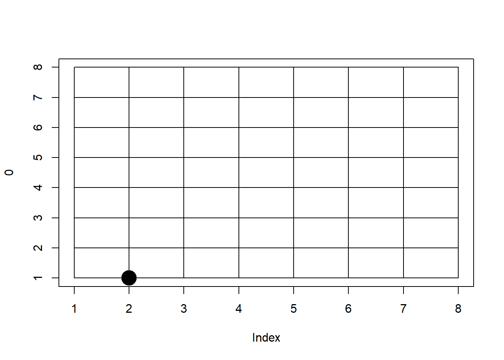
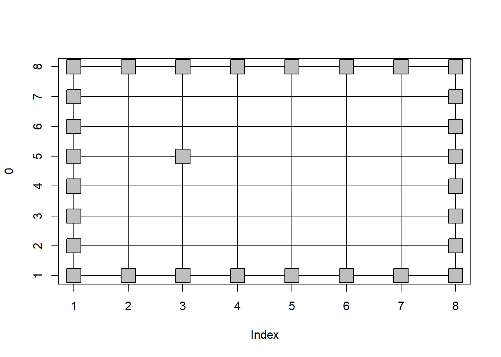
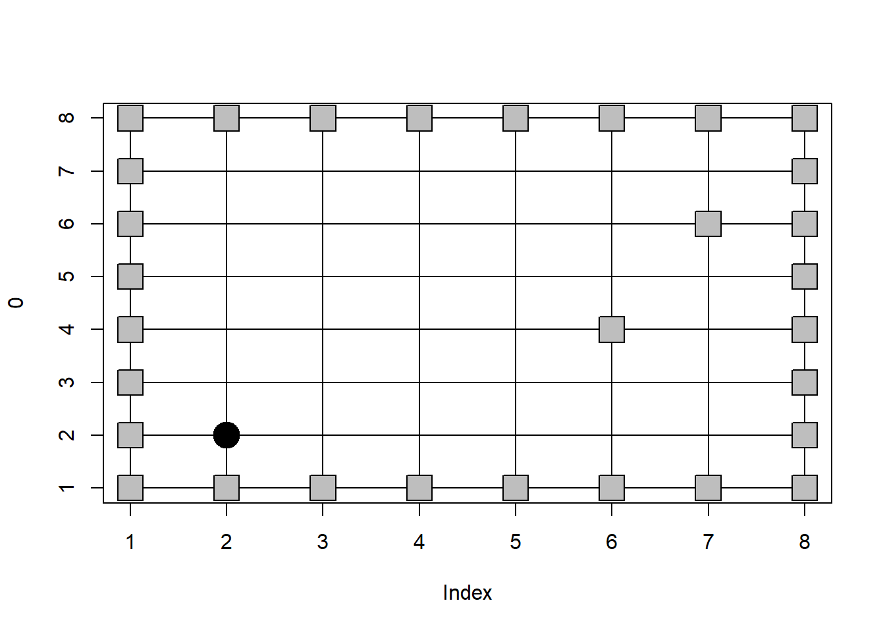
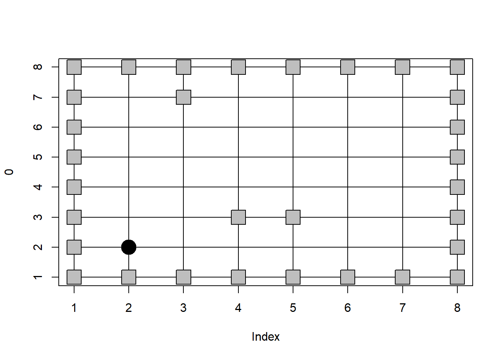
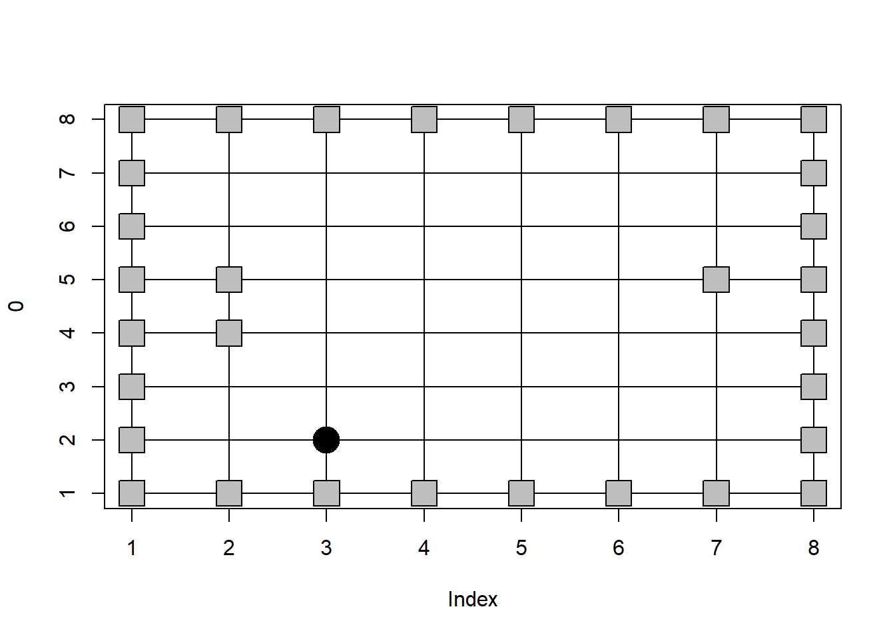
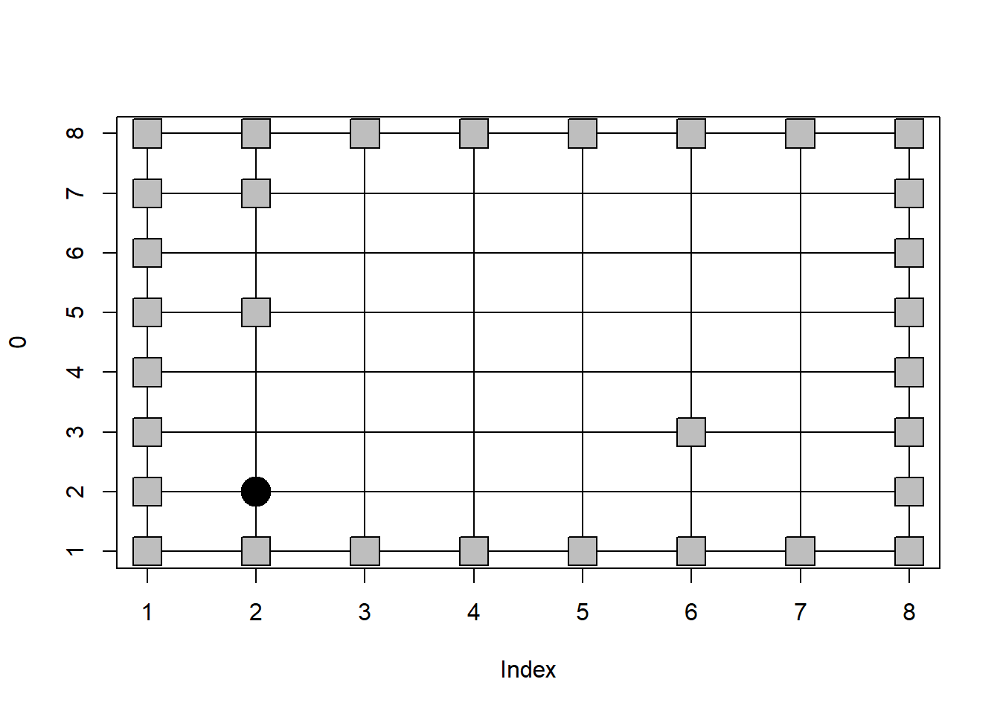
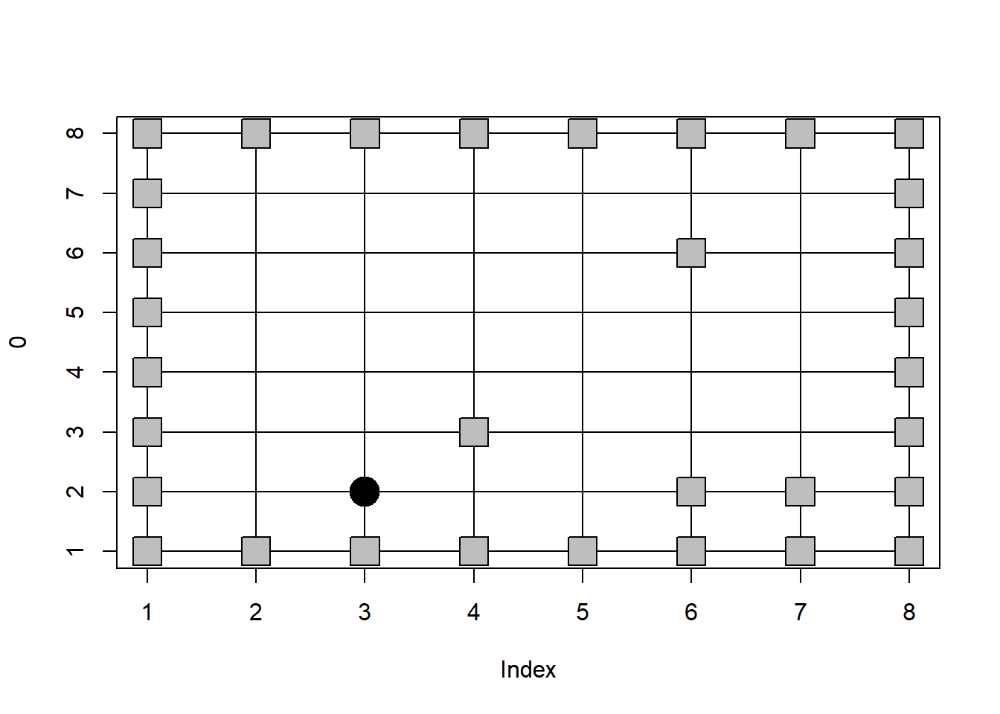

5 Lecture 04 - Maze Robot
5.1 Parameter/Argument, Global/Local
이번 시간에는 함수와 메트릭스의 사용법을 익히기 위해서 재미있는(?) 간단한 프로그램을 만들어 보겠습니다. 정사각형 격자 안에서 랜덤하게 한 칸씩 움직이며 시작 점부터 끝 점까지 가는 로봇을 구현하고 이를 시각화하는 프로그램이 되겠습니다.
먼저 프로그래밍에서 함수는 중요한 개념입니다. 이를 이해하기 위해서 parameter (매개변수) 와 argument (전달인자), 그리고 global (전역) 변수와 local (지역) 변수의 개념을 확실히 이해해야 합니다. 아래 parameter와 argument를 구분하고 myfunc 안에 있는 a 변수의 값과 밖에 있는 a의 값을 구분해봅시다.
a <- 10
myfunc <- function(b){
a <- b/2
return(a)
}
myfunc(a)
cat(a)
## global vs local
a <- 10
myfunc <- function(a){
a <- a/10
return(a)
}
myfunc(a)
cat(a)5.2 Exercise 4-1: Matrix indexing
0으로 채워진 3 x 3 메트릭스를 만들고 가장자리 값들을 1로 채우는 연습을 해봅니다.
M <- matrix(0, nrow=3, ncol=3)
M[,1] <- 1
M[,3] <- 1
M[1,] <- 1
M[3,] <- 15.3 Top-down design
탑다운 방식의 프로그래밍 디자인방법은 간략히 다음과 같은 순서로 진행합니다. 1) Divide a big problem into smaller problems, 2) keep dividing until the small problem can be solved easily, 3) Solve the small problems, 4) Merge the solutions to solve the big problem
이 방법으로 길찾기 로봇을 구현하기 위해서는 다음과 같이 문제를 세분화 하겠습니다. 먼저 구성물은 지도와 로봇이 있고 지도에는 시작점, 끝점, 막힌곳, 로봇은 현재 위치, 이동함수 (규칙) 등이 있으면 될 것 같습니다. 그리고 이러한 상황을 보여주기 위한 그리기 기능도 필요해 보입니다. 참고로 강사 생각이며 각자 다르게 생각할 수 있습니다. 좀 더 자세한 내용은 강의노트를 참고하세요.
5.4 Exercise 4-2: Draw world
먼저 로봇이 다니는 지도를 그리기 위해서 plot 함수를 사용합니다. plot 함수는 가장 기본이 되는 그래픽 함수로 입력 값에 따른 다양한 기능을 수행하는 함수입니다. 자세한 내용은 ?plot으로 도움말을 참고 하세요. 8 x 8 크기의 지도에서 격자를 다음과 같이 그릴 수 있습니다.
plot(0, type="n", ylim=c(1,8), xlim=c(1,8))
lines(x=c(1,1), y=c(1,8))
lines(x=c(2,2), y=c(1,8))
lines(x=c(3,3), y=c(1,8))
lines(x=c(4,4), y=c(1,8))
lines(x=c(1,8), y=c(1,1))
lines(x=c(1,8), y=c(2,2))
lines(x=c(1,8), y=c(3,3))
lines(x=c(1,8), y=c(4,4))
그런데 반복되는 lines 함수를 사용하는 패턴을 보실 수 있습니다. 이런 경우 다음과 같이 for 문을 이용할 수 있습니다. for 문의 i는 임의의 변수로 뒤에 오는 1:8 까지의 값을 한번씩 갖게 되며 각 값을 갖는 동안 { } 안의 코드를 8번 반복 실행하게 됩니다. 이 때 i에 저장된 값을 lines 파라메터 값을 사용하면 효율적으로 원하는 기능을 구현할 수 있습니다. 마지막 points 함수는 적당한 위치 (아래 예제에서는 x=3, y=3)의 위치에 pch=16 모양을 cex=3 만큼 크게 그리라는 명령입니다. ?points 또는 ?pch 등의 도움말을 참고 하세요.
plot(0, type="n", ylim=c(1,8), xlim=c(1,8))
for(i in 1:8){
lines(x=c(i,i), y=c(1,8))
lines(x=c(1,8), y=c(i,i))
}
points(3,3, pch=16, cex=3)
이제 앞서 코드들을 종합해서 map과 로봇을 그려주는 draw_world 라는 함수로 만들어 보겠습니다. 입력 파라메터는 현재 로봇의 위치인 cur_x, cur_y로 하고 지도를 그린 후 cur_x와 cur_y에 점(로봇)을 그리는 함수 입니다. 그리는 기능이 전부이므로 NULL을 리턴하도록 합니다 (웹페이지 작성 특성상 리턴 명령은 사용하지 않았습니다). 함수 내에서 n <- 8 로 한 것은 그 아래 코드들에서 공통적으로 같은 값(지도 크기)을 사용하므로 변수에 값을 지정한 후 사용할 경우 혹시 지도의 사이즈가 변경된다고 해도 모든 값들을 바꾸지 않고 n 값만 바꿔서 쉽게 기능을 적용하기 위함 입니다.
draw_world <- function(cur_x, cur_y){
n <- 8
plot(0, type="n", ylim=c(1,n), xlim=c(1,n))
for(i in 1:n){
lines(x=c(i,i), y=c(1,n))
lines(x=c(1,n), y=c(i,i))
}
points(x=cur_x, y=cur_y, pch=16, cex=3)
#return(NULL)
}위와 같이 코드를 작성한 후 한 번 실행하여 메모리에 함수를 등록 합니다. 이후 부터는 draw_world 호출만으로 구현한 기능을 사용할 수 있습니다. 아래는 그 사용 예 입니다. cur_x 또는 cur_y에 값을 변경하여 넣어 줄 때 마다 다른 위치에 점이 그려지는 것을 확인할 수 있습니다.
cur_x <- 1
cur_y <- 1
draw_world(cur_x, cur_y)
draw_world(cur_x+1, cur_y)
draw_world(cur_x+1, cur_y+1)
5.5 Exercise 4-4: Generate map
위 코드까지 작성했다면 어떤 식으로 로봇이 움직이는 것을 보여줄 수 있을지 추측할 수 있을 것입니다. 로봇이 적당한 위치로 움직이게 하고 draw_world 함수를 호출하는 과정을 반복하면 되는 것입니다. 그럼 로봇이 어떻게 어디로 움직일지를 결정하기 위해서 매트릭스를 구성해 보겠습니다. 이 매트릭스는 가상의 지도로 0과 1로 채워져 있으며 0은 로봇이 갈 수 있는 곳 1은 로봇이 가지 못하는 곳으로 정하고 로봇이 랜덤하게 움직이며 이동한 곳이 0인지 1인지 검사해서 이동을 완료할지 아니면 그 전 위치에서 다시 움직일 곳을 찾을지를 결정하면 됩니다. 먼저 0으로 채워진 매트릭스를 만들고 가장자리는 로봇이 움직이지 못 하도록 1로 채우겠습니다.
n<-8
maze <- matrix(0, nrow=n, ncol=n)
maze[1,] <- 1
maze[n,] <- 1
maze[,1] <- 1
maze[,n] <- 1이제 중앙 공간에서 이동하지 못하는 곳을 랜덤하게 정해서 넣겠습니다. 넣는 방법은 아래와 같습니다. 수업시간에 2차원 매트릭스의 인덱싱을 1차원처럼 해도 된다고 말씀 드렸습니다. 대신 인덱스 번호는 왼쪽 위로부터 1부터 시작해서 아래로 증가하고 해당 column의 길이 끝까지 간 후 다시 오른쪽 column 상단에서부터 시작되어 이어지는 인덱스 번호를 갖게 됩니다. 아래는 1부터 64까지 (가로 세로 8칸 이므로 64개) 인덱스 중 10개를 랜덤하게 뽑아서 해당 인덱스 자리의 값을 1로 채우는 코드 입니다. 앞서 가장자리를 1로 채운 곳과 겹치더라도 상관 없습니다.
maze[sample(1:64,10)] <- 1
maze## [,1] [,2] [,3] [,4] [,5] [,6] [,7] [,8]
## [1,] 1 1 1 1 1 1 1 1
## [2,] 1 0 0 0 0 0 0 1
## [3,] 1 0 0 0 0 0 1 1
## [4,] 1 0 0 1 0 0 0 1
## [5,] 1 0 0 0 0 0 0 1
## [6,] 1 1 0 0 0 0 0 1
## [7,] 1 0 1 0 0 0 0 1
## [8,] 1 1 1 1 1 1 1 1이제 위 코드를 활용해서 maze matrix 맵을 만드는 함수인 generate_maze 를 작성해 봅니다. 입력 파라메터는 n 하나로 가로 또는 세로의 (정사각형) 갯수를 의미합니다.
generate_maze <- function(n){
maze <- matrix(0, nrow=n, ncol=n)
maze[1,] <- 1
maze[n,] <- 1
maze[,1] <- 1
maze[,n] <- 1
## blocks
maze[sample(1:(n*n),5)] <- 1
maze
}
mymaze <- generate_maze(8)
mymaze## [,1] [,2] [,3] [,4] [,5] [,6] [,7] [,8]
## [1,] 1 1 1 1 1 1 1 1
## [2,] 1 0 0 0 0 0 0 1
## [3,] 1 0 0 0 1 0 0 1
## [4,] 1 0 0 0 0 0 0 1
## [5,] 1 0 0 0 0 0 0 1
## [6,] 1 0 0 0 0 0 0 1
## [7,] 1 0 0 0 0 0 0 1
## [8,] 1 1 1 1 1 1 1 15.6 Draw blocks and walls
이제 위에서 생성된 매트릭스를 기반으로 로봇이 가지 못하는 길을 사각형으로 그려넣어 맵을 완성합니다. 매트릭스가 8x8 일 경우 64개 포인트의 모든 값들을 비교하여 1일 경우 사각형을 그리는 코드를 만들면 되겠습니다. 이 때 값을 비교하기 위해 if 문을 사용할 수 있고 해당 값들을 비교하기 위해 아래와 같은 코드를 작성할 수 있습니다.
if(mymaze[1,1]==1){
## plot square
}
if(mymaze[1,2]==1){
## plot square
}
if(mymaze[1,3]==1){
## plot square
}
...
if(mymaze[2,1]==1){
## plot square
}
if(mymaze[2,2]==1){
## plot square
}
if(mymaze[2,3]==1){
## plot square
}
...그러나 이런식으로 64개 값들을 모두 비교하는 것은 비효율적입니다. mymaze 매트릭스의 인덱스 번호가 row와 column각각 1부터 8까지 증가하는 것으로 보면 앞에서 배웠던 for 문을 사용해서 좀 더 효율적인 코드를 만들 수 있을 듯 합니다. 아래 코드에서 nrow와 ncol은 각각 해당 매트릭스의 행과 열의 갯수를 계산해 주는 함수들 입니다. 즉, for 문을 이용하여 row 만큼 반복하고 다시 그 안에서 for문을 한 번 더 사용하여 column 수만큼 반복을 하면 해당 매트릭스의 모든 값들을 참조할 수 있습니다. 아래는 mymaze[i,j]가 1일 경우 points 문을 이용하여 pch=22 인 모양을 cex=3 크기로 bg=“gray” 색으로 칠하는 코드입니다.
draw_world(cur_x, cur_y)
for(i in 1:nrow(mymaze)){
for(j in 1:nrow(mymaze)){
if(mymaze[i,j]==1){
points(i,j, pch=22, cex=3, bg="gray")
}
}
}
이제 위 코드를 앞서 만들었던 draw_world 함수에 추가하여 draw_world 함수를 호출할 경우 완전한 맵과 적당한 위치의 로봇을 그려주도록 할 수 있습니다. 그런데 맵 정보는 generate_maze 함수로 생성한 매트릭스가 가지고 있으므로 생성된 맵의 정보를 draw_world 함수 내부에서 사용할 수 있도록 파라메터로 전달해서 넘겨주는 것이 필요합니다. 따라서 maze라는 파라메터를 draw_world 함수에 추가하고 함수 내부에 있던 n 값은 입력받은 매트릭스의 row 또는 column 수를 저장하도록 n <- nrow(maze) 코드를 추가합니다.
draw_world <- function(maze, cur_x, cur_y){
n <- nrow(maze)
plot(0, type="n", ylim=c(1,n), xlim=c(1,n))
for(i in 1:n){
lines(x=c(i,i), y=c(1,n))
lines(x=c(1,n), y=c(i,i))
}
for(i in 1:nrow(maze)){
for(j in 1:nrow(maze)){
if(maze[i,j]==1){
points(i,j, pch=22, cex=3, bg="gray")
}
}
}
points(x=cur_x, y=cur_y, pch=16, cex=3)
}이제 8 x 8 맵을 생성하고 랜덤하게 길을 막은 후 로봇을 x=2, y=2로 위치하게 한 완전한 지도를 그릴 수 있습니다. 참고로 여기서 draw_world 함수에서 maze 맵을 생성하도록 generate_maze에서 수행하는 코드와 비슷한 코드를 넣을 수 있습니다. 그러나 이럴 경우 한 함수에서 두 가지 이상의 작업을 수행하게 되므로 가독성, 함수 독립성, 유지보수 용이성이 낮아지면서 프로그램의 효율성이 떨어질 수 있습니다.
cur_x <- 2
cur_y <- 2
mymaze <- generate_maze(8)
draw_world(mymaze, cur_x, cur_y)
5.7 Move one step
이제 로봇이 한 걸음을 옮기는 코드를 작성해 보겠습니다. 로봇은 현재 위치에서 4개의 방향으로 갈 수 있으나 이 중 막힌 길로는 갈 수 없습니다. 즉 현재 위치에서 동,서,남,북 중 하나의 방향을 랜덤하게 정하고 그 방향으로 한 걸음을 움직인 곳의 지도(매트릭스)상의 값이 0이면 이동한 위치 그대로 있고 1이면 다시 왔던 자리로 돌아가면 됩니다. next_x와 next_y를 cur_x, cur_y의 한 걸음 이후 위치라 정의하면 아래와 같이 정해진 방향으로 업데이트 한 후 next_x, next_y 위치에서 draw_world를 수행하면 됩니다.
cur_x <- 2
cur_y <- 2
draw_world(mymaze, cur_x, cur_y)
one_step_direction <- sample(c("E","W", "S", "N"), 1)
if(one_step_direction=="E"){
next_x <- cur_x + 1
next_y <- cur_y
}else if(one_step_direction=="W"){
next_x <- cur_x - 1
next_y <- cur_y
}else if(one_step_direction=="S"){
next_x <- cur_x
next_y <- cur_y - 1
}else if(one_step_direction=="N"){
next_x <- cur_x
next_y <- cur_y + 1
}
draw_world(mymaze, next_x, next_y)
5.8 Sleep for delay
그러나 위 코드를 실행하면 cur_x, cur_y 위치에 있을 때 그림은 보여지지 않고 마지막 next_x, next_y 위치 로봇에 대해서만 그림이 그려져 보이는 것을 알 수 있습니다. 이는 코드 문제라기 보다는 컴퓨터 반응시간 문제로 그림이 그려지기 전에 다른 그림이 그려지는 문제로 나타나는 현상 입니다. 따라서 Sys.sleep(1) 이라는 명령어로 1초 동안 코드 실행을 멈출 수 있고 그 동안 우리는 cur_x, cur_y 위치의 로봇이 그려지는 것을 볼 수 있습니다.
또한 위 코드는 지도상의 어디든 갈 수 있는 상태로 막힌 곳의 위치로는 움직이지 못 하도록 하는 코드가 필요합니다. 이를 위해 다음 마지막 부분의 if문처럼 코드를 업데이트하여 next_x, next_y 위치가 0일 경우에만 draw_world를 호출하여 그림을 업데이트 하고 그렇지 않으면 아무 일도 하지 않게 합니다.
cur_x <- 2
cur_y <- 2
draw_world(mymaze, cur_x, cur_y)
Sys.sleep(1)
one_step_direction <- sample(c("E","W", "S", "N"), 1)
if(one_step_direction=="E"){
next_x <- cur_x + 1
next_y <- cur_y
}else if(one_step_direction=="W"){
next_x <- cur_x - 1
next_y <- cur_y
}else if(one_step_direction=="S"){
next_x <- cur_x
next_y <- cur_y - 1
}else if(one_step_direction=="N"){
next_x <- cur_x
next_y <- cur_y + 1
}
if(mymaze[next_x, next_y]==0){
draw_world(mymaze, next_x, next_y)
}
5.9 Move 50 steps
이제 for 문을 이용해서 50 step 이동하는 것을 구현해 보겠습니다. 여기서 눈여겨 볼 부분은 마지막 next_x 와 next_y의 위치에 0일 경우 draw_world를 호출하지 않고 cur_x, cur_y 값을 업데이트 시켜서 효율적으로 구현했습니다.
mymaze <- generate_maze(8)
cur_x <- 2
cur_y <- 2
for(i in 1:50){
draw_world(mymaze, cur_x, cur_y)
Sys.sleep(1)
one_step_direction <- sample(c("E","W", "S", "N"), 1)
cat(i, "/", one_step_direction, "\n");flush.console()
if(one_step_direction=="E"){
next_x <- cur_x + 1
next_y <- cur_y
}else if(one_step_direction=="W"){
next_x <- cur_x - 1
next_y <- cur_y
}else if(one_step_direction=="S"){
next_x <- cur_x
next_y <- cur_y - 1
}else if(one_step_direction=="N"){
next_x <- cur_x
next_y <- cur_y + 1
}
if(mymaze[next_x, next_y]==0){
cur_x <- next_x
cur_y <- next_y
}
}